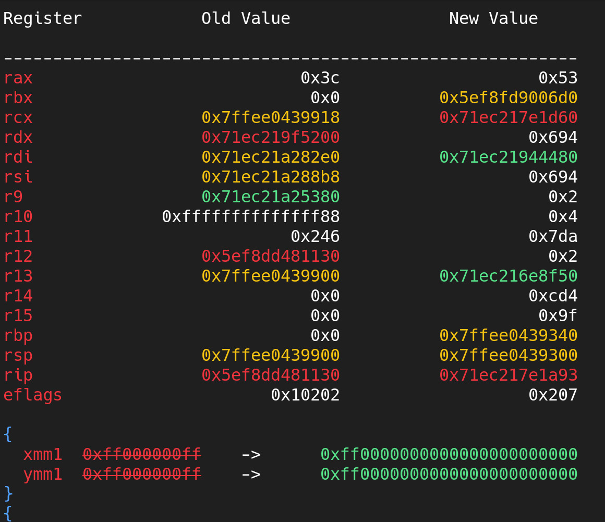
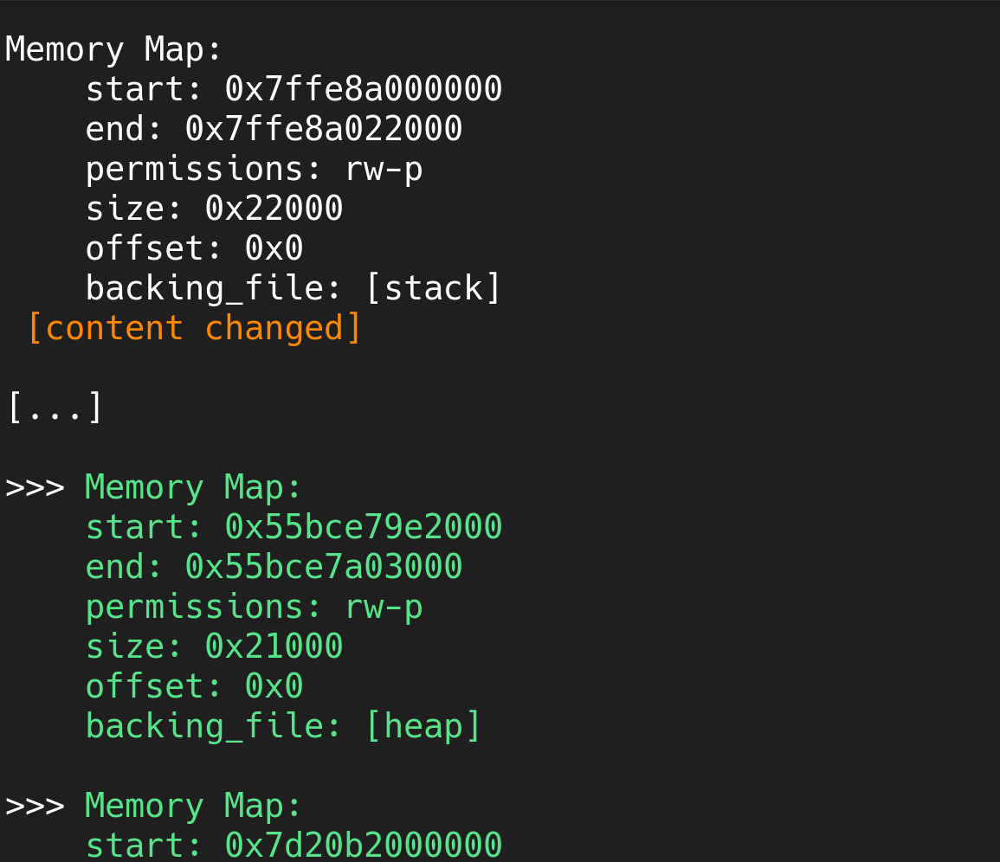
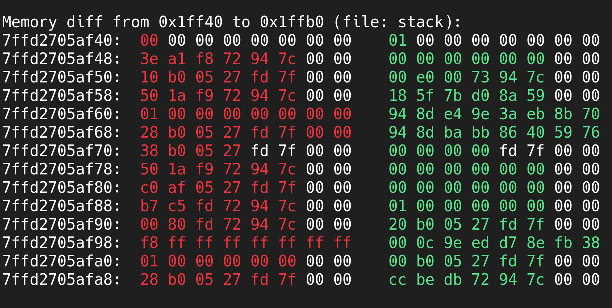
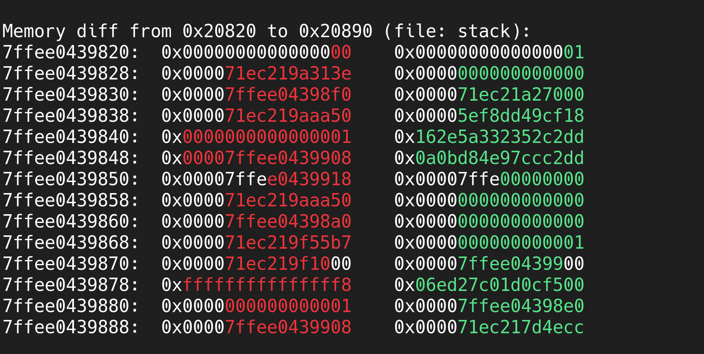
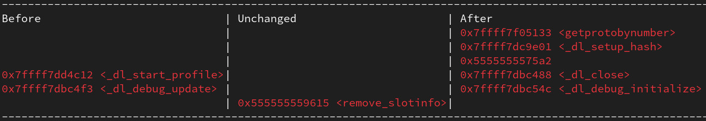

Snapshot Diffs
Snapshot diffs are objects that represent what changed between two snapshots. They are created through the diff() method of a snapshot.
The level of a diff is resolved as the lowest level of the two snapshots being compared. For example, if a diff is created between a full snapshot and a base snapshot, their diff will be of base level. For more information on the different levels of snapshots, see the Snapshots page.
ASLR Mess
If Address Space Layout Randomization (ASLR) is enabled, the memory addresses in the diffs may appear inconsistent or messy. libdebug will remind you of this when you diff snapshots with ASLR enabled. See here for more information.
API
Just like snapshots themselves, diffs try to mimic the API of the Debugger and ThreadContext objects. The main difference is that returned objects represent a change in state, rather than the state itself.
Register Diffs
The regs attribute of a diff object (aliased as registers) is a RegisterDiffAccessor object that allows you to access the register values of the snapshot. The accessor will return a RegisterDiff object that represents the difference between the two snapshots.
You can access each diff with any of the architecture-specific register names. For a full list, refer to the Register Access page.
Example usage
Output:Each register diff is an object with the following attributes:
| Attribute | Data Type | Description |
|---|---|---|
old_value |
int | float |
The value of the register in the first snapshot. |
new_value |
int | float |
The value of the register in the second snapshot. |
has_changed |
bool |
Whether the register value has changed. |
Memory Map Diffs
The maps attribute of a diff object is a MemoryMapDiffList object that contains the memory maps of the process in each of the snapshots.
Here is what a MemoryMapDiff object looks like:
Example usage
Output (indented for readability):MemoryMapDiff(
old_map_state=MemoryMap(
start=0x7fff145ea000,
end=0x7fff1460c000,
permissions=rw-p,
size=0x22000,
offset=0x0,
backing_file=[stack]
) [snapshot with content],
new_map_state=MemoryMap(
start=0x7fff145ea000,
end=0x7fff1460c000,
permissions=rw-p,
size=0x22000,
offset=0x0,
backing_file=[stack]
) [snapshot with content],
has_changed=True,
_cached_diffs=None
)
The map diff contains the following attributes:
| Attribute | Data Type | Description |
|---|---|---|
old_map_state |
MemoryMap |
The memory map in the first snapshot. |
new_map_state |
MemoryMap |
The memory map in the second snapshot. |
has_changed |
bool |
Whether the memory map has changed. |
Memory Map Diff Levels
If the diff is of base level, the has_changed attribute will only consider superficial changes in the memory map (e.g., permissions, end address). Under the writable and full levels, the diff will also consider the contents of the memory map.
Memory Content Diffs
If the diff is of full or writable level, the MemoryMapDiff object exposes a useful utility to track blocks of differing memory contents in a certain memory map: the content_diff attribute.
Example usage
Output:The attribute will return a list of slice objects that represent the blocks of differing memory contents in the memory map. Each slice will contain the start and end addresses of the differing memory block relative to the memory map.
Attributes
| Attribute | Data Type | Level | Description | Aliases |
|---|---|---|---|---|
| Common | ||||
snapshot1 |
Snapshot |
All | The earliest snapshot being compared (recency is determined by id ordering). | |
snapshot2 |
Snapshot |
All | The latest snapshot being compared (recency is determined by id ordering). | |
level |
str |
All | The diff level. | |
maps |
MemoryMapDiffList |
All | The memory maps of the process. Each map will also have the contents of the memory map under the appropriate snapshot level. | |
| Thread Snapshot Diff | ||||
regs |
RegisterDiffAccessor |
All | The register values of the thread. | registers |
| Process Snapshot Diff | ||||
born_threads |
list[LightweightThreadSnapshot] |
All | Snapshots of all threads of the process. | |
dead_threads |
list[LightweightThreadSnapshot] |
All | Snapshots of all threads of the process. | |
threads |
list[LightweightThreadSnapshotDiff] |
All | Snapshots of all threads of the process. | |
regs |
RegsterDiffAccessor |
All | The register values of the main thread of the process. | registers |
Pretty Printing
Pretty Printing is a feature of some libdebug objects that allows you to print the contents of a snapshot in a colorful and eye-catching format. This is useful when you want to inspect the state of the process at a glance.
Diff objects have the following pretty printing functions:
| Function | Description |
|---|---|
pprint_registers() |
Prints changed general-purpose register values |
pprint_registers_all() |
Prints all changed register values (including special and vector registers) |
pprint_maps() |
Prints memory maps which have changed between snapshots (highlights if only the content or the end address have changed). |
pprint_memory() |
Prints the memory content diffs of the snapshot. See next section for more information |
pprint_backtrace() |
Prints the diff of the backtrace between the two snapshots. |
Here are some visual examples of the pretty printing functions:
Register Diff Pretty Printing
The pprint_registers() function of a diff object will print the changed general-purpose register values.
Here is a visual example of the register diff pretty printing:

Memory Map Diff Pretty Printing
The pprint_maps() function of a diff object will print the memory maps which have changed between snapshots. It also hi
Here is a visual example of the memory map diff pretty printing:

Memory Content Diff Pretty Printing
The pprint_memory() function of a diff object will print the content diffs within a certain range of memory addresses.
Function signature
| Parameter | Data Type | Description |
|---|---|---|
start |
int |
The start address of the memory range to print. |
end |
int |
The end address of the memory range to print. |
file |
str (optional) |
The file to use for the memory content. Defaults to hybrid mode (see memory access). |
override_word_size |
int (optional) |
The word size to use to align memory contents. By default, it uses the ISA register size. |
integer_mode |
bool (optional) |
Whether to print the memory content in integer mode. Defaults to False |
Start after End
For your convenience, if the start address is greater than the end address, the function will swap the values.
Here is a visual example of the memory content diff pretty printing (with and without integer mode):


Stack Trace Diff Pretty Printing
To pretty print the stack trace diff (backtrace) of a process, you can use the pprint_backtrace() function. Return addresses are printed from the most to the least recent. They are placed in three columns. The center one is the common part of the backtrace, while the left and right columns are the differing parts. The following image shows an example of a backtrace diff:
